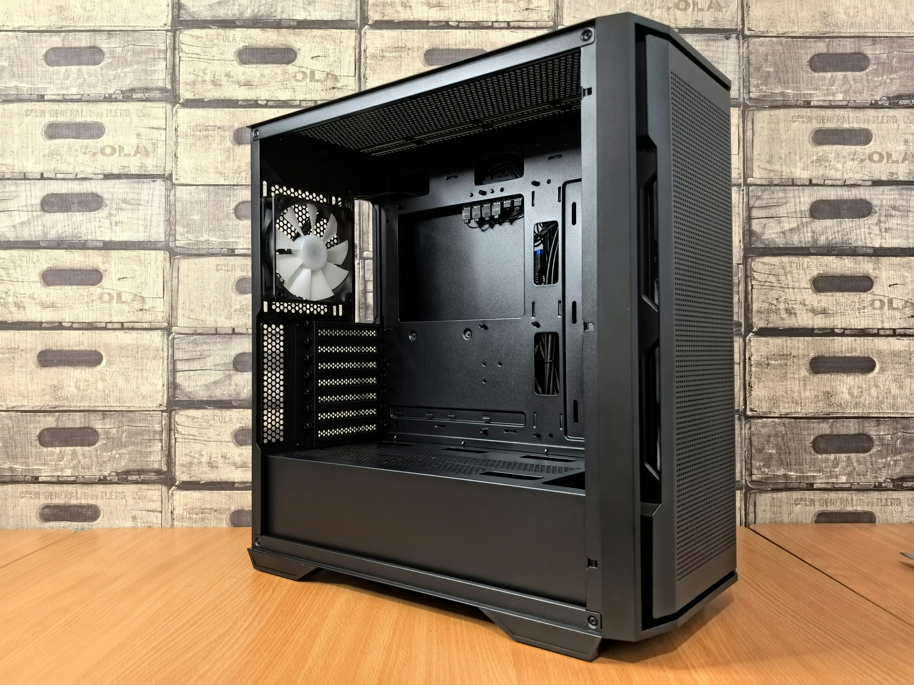
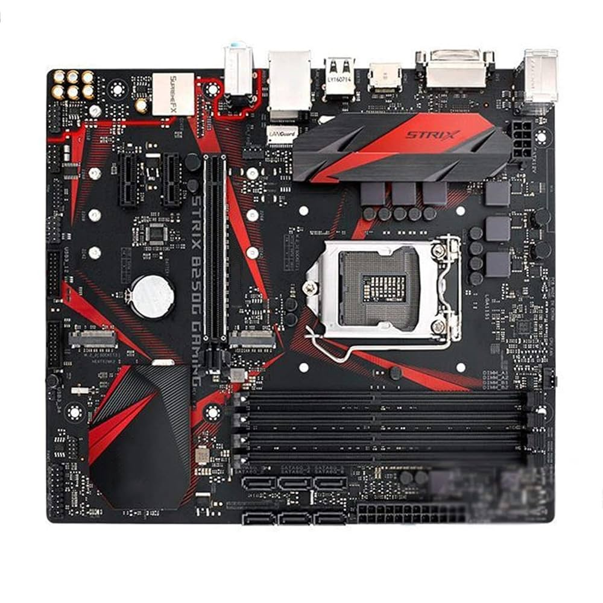
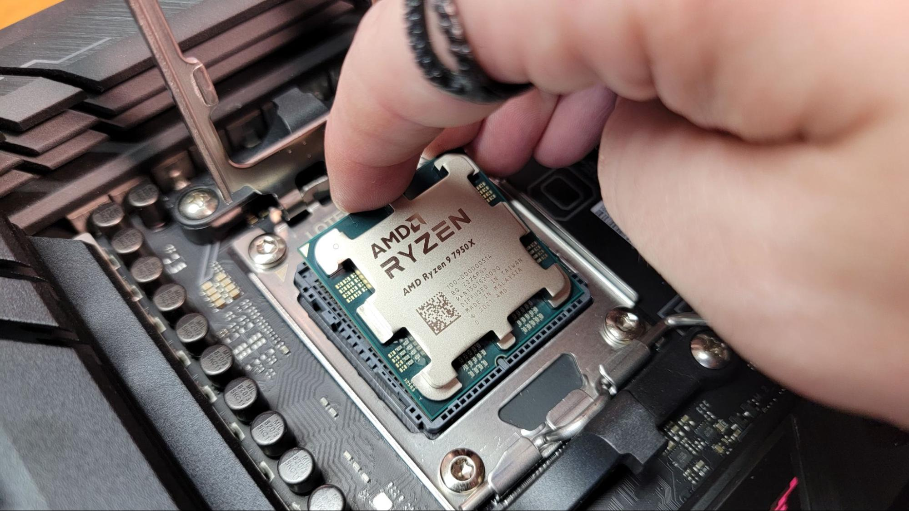
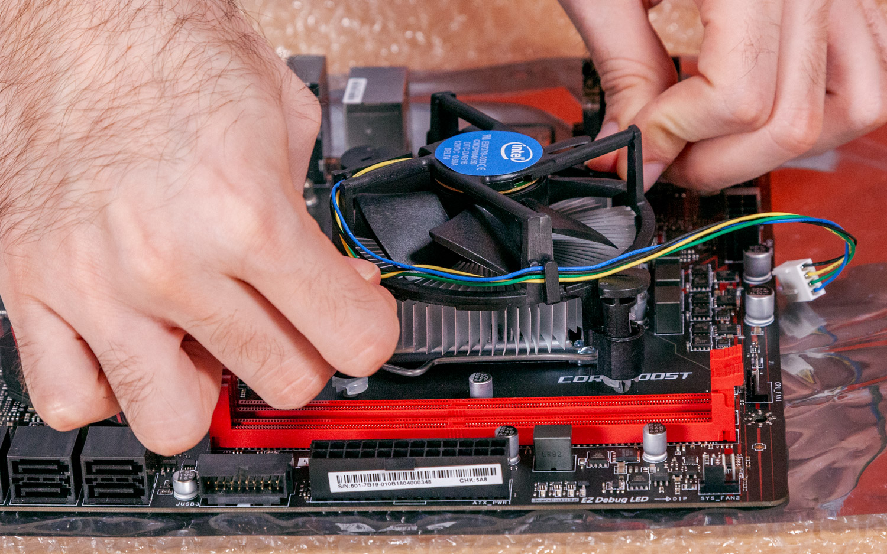
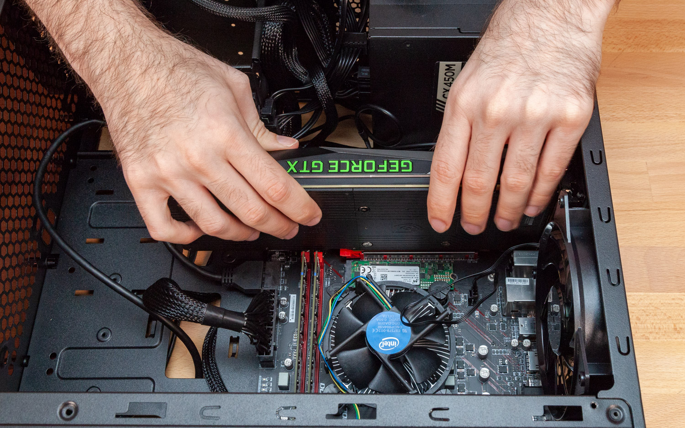
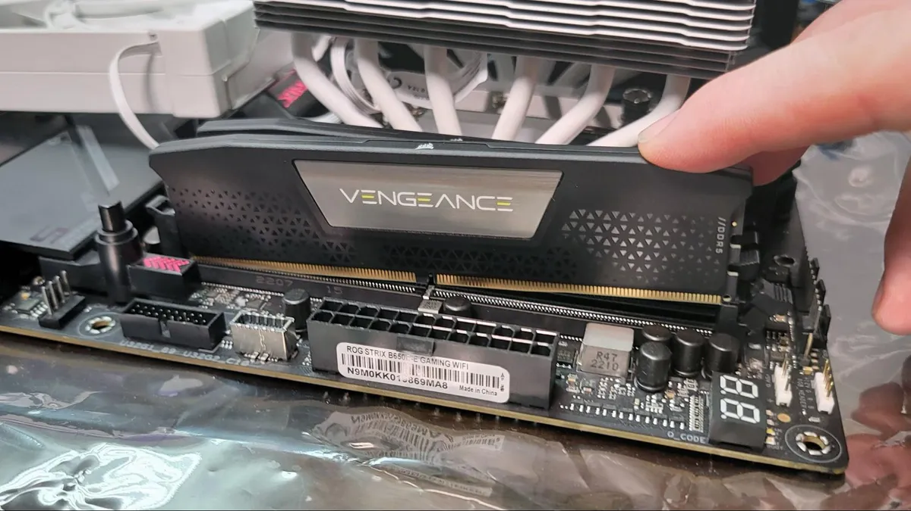
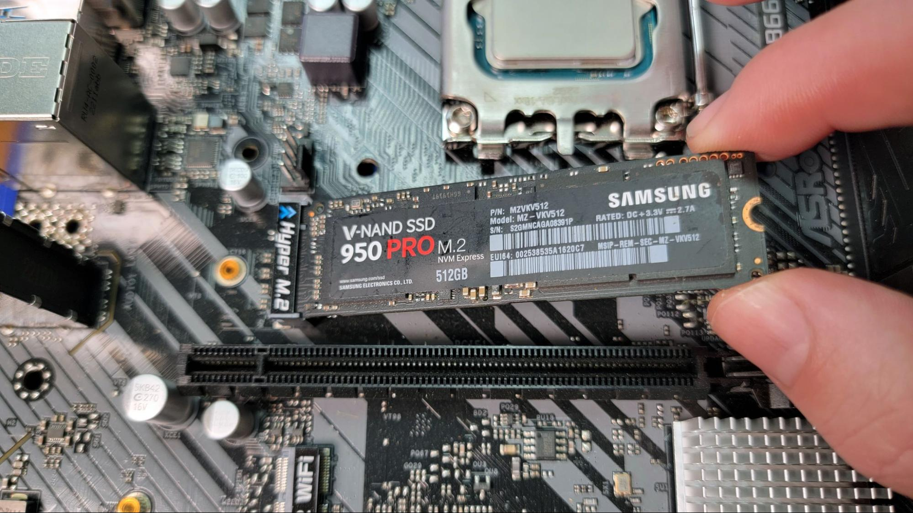
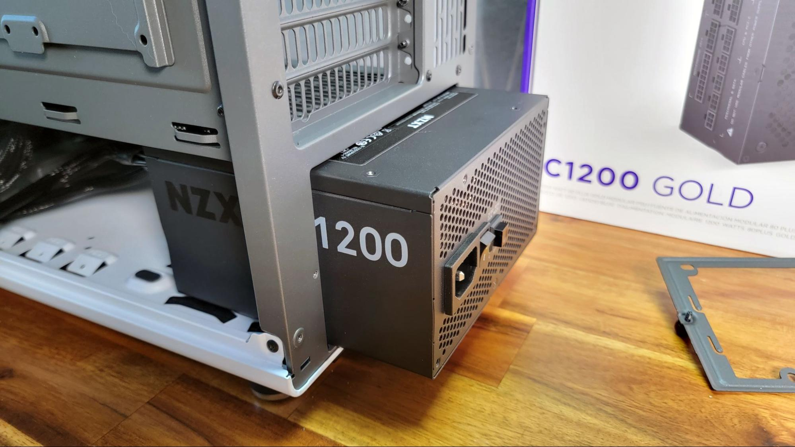

Steps to Build Your Own PC :-
STEP 1 : PC CASE
First, consider the physical size of the case and where the computer will
live. If it has to fit on a shelf, or you have limited space on your desk,
those constraints should come first. You’ll want to leave some room both
in front of and behind your PC for proper airflow, and make sure it’s
sitting on a hard, flat surface. Manufacturers tend to label cases by the
largest size of motherboard that they support. ATX is the most common size
for home desktops, with “mid towers” describing the typical desktop box
you’re used to seeing out in the world and “full tower” indicating a
taller case with a more spacious interior.
There are a variety of aesthetic features on cases that generally come
down to personal preference, so don’t be afraid to pick something just
because you like how it looks. Case makers often offer color and panel
variations for their most popular models, and it’s worth shopping around
to find one that fits your taste. Finally, you’ll want to keep an eye out
for any special requirements you might have. Users with a virtual-reality
headset, for example, may want to make sure their case has a USB Type-C
port on the front.

Suggested Hardware:-
- Hyte Y60
- Corsair 4000D Airflow
- Fractal Design Meshify C
- NZXT H510 Elite ATX Mid-Tower
STEP 2 : MOTHERBOARD
Every other component communicates through the motherboard. They come in
different sizes and configurations, but they all have the same general
function. Companies tend to make motherboards for both Intel and AMD
processors, but the two aren’t compatible with each other, so you’ll want
to make sure you buy a CPU and motherboard that match.
Motherboards come in a couple of flavors, but the most important thing to
know is what kind of socket it has. There are basically two: LGA for
Intel, and AM for AMD. You'll always see them listed with a number after
them, like “LGA1150” or “AM5.” The exact numbers after the LGA and AM
portions of these socket names will change over time, to indicate which
generation of Intel or AMD chips they support, but the standards as of
2025 (which will work with the latest chips from either maker) are LGA
1851 for Intel and AM5 for AMD. Motherboards also come in a couple of
sizes, the most common being ATX. That’s what I generally recommend,
especially if this is your first build. More room inside the case means
more room for your hands, which will make setup, upgrading, and
maintenance easier. Your PC case will list which size motherboard it
supports, so make sure they match up. If you're feeling adventurous, you
can always check out our guide to motherboard sizes, especially if you
want to build a small-form-factor PC.

Suggested Hardware:-
- Gigabyte B650 Gaming X AX (AM5 Socket)
- Gigabyte A620M Gaming X (AM5 Socket) Micro-ATX
- Asus Prime B760-Plus D4 (LGA 1700 Socket)
- Gigabyte Z790 Gaming X AX (LGA 1700 Socket)
STEP 3 : CPU AND CPU COOLER
The brain of your computer, the processor sockets directly into the
motherboard and manages basically everything your computer does. This will
be the most important component for determining non-gaming performance,
and likely the first or second most expensive individual item in your
budget. You’ll want to make sure the socket on your CPU matches the socket
on your motherboard.
Every system needs a graphics chip, even if it’s just a basic one that
renders the desktop and YouTube videos. While many entry-level and
midrange processors have integrated graphics that can run basic
operations, chipmakers may assume higher-end systems will run dedicated
graphics and leave this out.
Chill out: Because your CPU works so hard, it needs a dedicated
cooling solution. This is another area where entry-level chips will come
with a basic fan and heat sink that will work for most users, but more
expensive chips won’t have one in the box. For a simple air cooler, we
recommend the tried-and-true Cooler Master Hyper 212, which comes in a
variety of colors and fan options. For an upgraded pick, check out Cooler
Master’s ML240L, a liquid cooler with a closed loop so you don’t have to
stress about spills.


Suggested Hardware:-
- AMD Ryzen 5 9600X 6-Core 3.9 GHz (AM5 Socket)
- AMD Ryzen 7 9800X3D 8-Core 4.7GHz (AM5 Socket)
- Intel Core i5-12600K 6-Core 3.7 GHz (LGA 1700 Socket)
- Intel Core i7-12700K 8-Core 3.6 GHz (LGA 1700 Socket)
- Intel Core i9-13900K 8-Core 5.8 GHz (LGA 1700 Socket)
STEP 4 : GPU
If you plan on gaming, you’ll need a graphics processing unit (also called
a graphics card). This is a specialized processor that’s designed and
optimized for handling visual data like the graphics in video games. It
may also contribute during other intense workloads, like video or photo
editing, 3D modeling, or machine learning.
The two major manufacturers right now are AMD and Nvidia. But rather than
buy a GPU directly from them, they sell the processors to board partners
like EVGA, Asus, and MSI, who then turn them into graphics cards. Whether
you choose AMD or Nvidia will likely depend on where you can get a better
deal, so make sure to keep an eye out for deals, rebates, and even free
games with GPUs. Intel also recently entered the scene, and we're working
on getting our hands on one for testing.
In my opinion, it's better to put the bulk of your budget toward a
graphics card. The more you spend now, the longer it's going to last—like
buying a $100 pair of shoes that lasts you years instead of a $20 pair
that falls apart after a few months. Cheap graphics cards are penny-wise
but dollar-foolish for gaming PCs. For a regular old home-office PC, you
can probably get away with your CPU’s built-in graphics.

Suggested Hardware:-
- Asus Prime GeForce RTX 5080 OC
- MSI GeForce RTX 5070 Ti Ventus 3X OC
- Asus Prime Radeon RX 9070 XT OC Edition
- Gigabyte Radeon RX 9070 XT Gaming OC
STEP 5 : THE MEMORY KIT
You’ll see a lot of the same terms when you’re looking at memory and
storage, but they’re very different. Memory is more like that one table
you toss things on to deal with later. It’s scratch paper; it’s
short-term. It’s very important, though, because software uses memory to
cache (temporarily store) data in a place where it can be retrieved
quickly.
Most systems opt to run either two or four DIMMs (the physical memory
sticks) in identical sets to improve speed and reliability. If you plan to
add 16 GB for example, our recommended minimum, it’s likely you’ll buy a
“2 x 8GB kit” and install both. Make sure to check your motherboard
specifications for details on supported memory and configurations. Before
you buy, make sure to go check out our in-depth guide to computer memory,
which covers everything you need to know about buying, as well as some of
our favorite picks.

Suggested Hardware:-
- Corsair Vengeance LPX 16-GB 288-Pin RAM
- G.Skill Ripjaws V Series 32-GB 288-Pin RAM
- Corsair Dominator Platinum 64-GB 288-Pin RAM
STEP 6 : STORAGE
Every system needs storage, and how much will depend once again on what
you plan to use the system for. We recommend at least 256 GB of storage
for any system, even for light home use. If you’re gaming, you may find it
beneficial to install your OS to a 256-GB main drive, then add a second
1-TB or larger drive for your games and media.
You can skip the bulky HDDs. Basically all consumer systems now use SSDs
in the M.2 format, which look like a digital stick of gum and screw
directly into your motherboard. They’re much faster, easier to install,
and keep the cable clutter down.

Suggested Hardware:-
- Samsung 980 Pro M.2 SSD
- Samsung 970 Evo M.2 SSD
- Corsair MP600 M.2 SSD
- WD Blue 1-TB Internal SSD
STEP 7 : POWER SUPPLY
While it sounds simple, your power supply’s job has an extremely important
role in the life of your system. If something goes wrong with your power
supply, it’s also likely to permanently damage other components in the
process. Unfortunately, the markers for quality, reliability, and safety
aren’t easily identified by looking at specs or user reviews.
With that in mind, we recommend sticking with one of a few major
manufacturers for your power supply needs. Those include Cooler Master,
Corsair, EVGA, and NZXT, all of which have produced excellent power
supplies and responded quickly to issues. If you’re using PCPartPicker, it
will recommend a wattage based on your selected parts. If your wattage is
too low, the system will shut off randomly or not start at all.
At the other end, the PSU won’t be as efficient if the wattage is too
high, which is what the gold and silver ratings refer to. Finally, a
modular power supply refers to the cables, which can be completely
disconnected from the unit to keep down clutter and simplify installation.
One to look out for specifically is the 12V-2x6 cable, new for the latest
generation of graphics cards.

Suggested Hardware:-
- Corsair RM1000X 1000-Watt Power Supply
- Corsair RM750e (2025)
- EVGA 1000GT